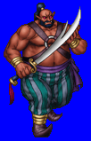
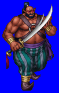
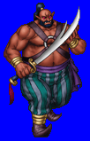
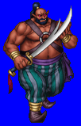

Height: 3 meters +Weight: 500 lbs. +
Habitat: Various Origin: Many Places
Meaning: English word "giant"
Its appearance differs little from that of humans, but its size can be twice to several times larger. Giants appear in several sets of mythologies. In most, they are enemies of the god(s). They are generally savage, but not necessarily unintelligent. The fact that humans underestimate the intelligence of giants can serve as the catalyst for many unpleasent encounters. They have little need for weapons. Their brute strength is usually more than enough to accomplish their ends.